Strawberry (Fragaria spp) is grown for its fruits which are widely appreciated for their bright red colour, aroma, sweetness and juicy texture. These fruits can be consumed fresh or in foods as pies, preserves, among others.
Although farmers have been quite reluctant in participating in strawb...erry farming stating that the industry is not very developed, those looking into venturing into the practice are highly encouraged because it has huge income potential.
Fruits are sold locally or exported.
Their demand is readily available in major urban markets, supermarkets and in marketing companies like Brookside, Trufood, KCC, among others.
Strawberries are very easy to maintain.
Strawberry varieties grown in Kenya include:-
- Chandler
- Tribute
- Tristar
- Tioga Selva
- Domail
- Rabunda
- Pajaro
- Douglas
Strawberry farming in Kenya is done outdoors. However, for better performance, greenhouses are recommended because protect the plants from drought and excess rain.
farming does best in areas whose soil PH is 5.5 6-6.5. The soil should be well drained and weed-free. The crop thrives in hot climate and does not tolerate frost or extremely low temperatures.
They do well in levelled or slightly higher grounds and require 6-10 hours of direct sunlight each day.
Strawberries can be grown from seeds, or using transplants (runners) from already existing strawberry plants.
It is however more difficult to start with seeds and thus runners are mostly used.
Till the land and remove weeds. CLAMPDOWN 480SL 200ml/20l is a non-selective herbicide which kills all types of weeds.
Add manure and fertilizer (DAP) in order to ensure adequate supply of nutrients to the crop. The fertilizer and/ or manure should be mixed with HUMIPOWER at the rate of 1kg Humipower into 50kg fertilizer or 1ton manure. This helps in improving the crops’ nutrient uptake as well as stimulating growth.
Construct raised beds.
Prepare planting holes. These should be deep and enough to accommodate the entire root system of the crop, without bending it.
Plant seedlings at a spacing of 20 inches apart and 4 feet between rows. The roots should be covered, but the crown should be right at the soil surface.
Mulching -after planting the strawberry plants, mulching the beds with pine needles, shredded leaves or straw helps to keep the soil temperature down, mitigate the weed problem, and also keeps the fruit cleaner by keeping the strawberries off of the dirt. As the mulch breaks down, it also adds organic matter to the soil.
Weeding – weeds compete with the plants for nutrient, moisture, space and sunlight, as well as harbouring pathogens. Manual weeding is recommended. However, during critical growth periods, i.e., flowering, fruiting, daughter plant growth and establishment, weeding should not be done. This is in order to avoid any disturbances
Training– strawberries are sprawling plants and the seedlings send out runners. These runners should be trained in order to follow a specific pattern for better performance.
Irrigation - water is critically is very essential when growing strawberries. The plants need a lot of water especially when the runners and flowers are developing. Drip irrigation is highly recommended as it waters at the root.
Pruning - this is majorly aimed at increasing fruit production. Flowers should be pruned off immediately they appear.
Fertilization – application fertilizers and manure boost production. However, if too much fertilizer is applied, this promotes excessive leaf growth and poor production of flower stalks. Too much nitrogen results in soft and easily-damaged strawberries.
Besides basal fertilizers and manure, foliar feeds should be applied in order to help supply both micro and macro nutrient elements. These include OPTIMIZER, DIMIPHITE, ZINC GOLD, FERRARI GOLD, among others.
Pests
1.Strawberry bud weevil (Clipper) – infestation leads to creation of holes in flowers and petals. Stems are chewed or clipped through.
example:
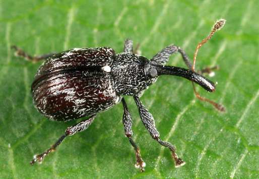
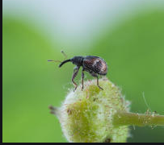
Spray SINOPHATE 750SP 20g/20l or EPITOME ELITE 500SP 10g/20l or KINGCODE ELITE 50EC 10ml/20l
2.Tarnished plant bugs – these puncture the plant tissue and suck the sap leading to tissue distortion and premature leaf fall. Severely infested leaves become chlorotic. They also secrete honeydew which encourages the development of sooty mold as well as attracting other insects.
example:
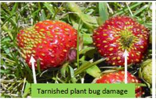
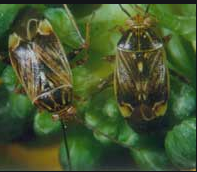
Spray LEXUS 247SC 8ml/20l or LOYALTY 700WDG 5g/20l or PRESENTO 200SP 5g/20l
3.Strawberry thrips – the adults and nymphs feed on the leaves and most preferably flowers by sucking the sap thus causing damages which may lead to flower damage/abortion thus production of reduced or malformed fruits.
example:
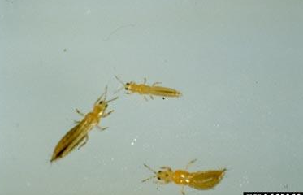
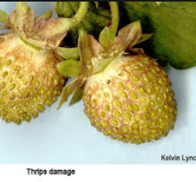
Spray ALONZE 3ml/20l or DEFENDER 25EC 40ml/20l or KINGCODE ELITE 50EC 10ml/20l
4.Nematodes – the affected plants are stunted, older leaves die and few runners are produced. Roots may be short and stubby, with swellings.
example:
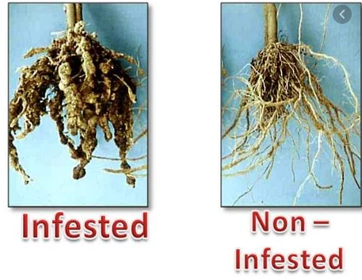
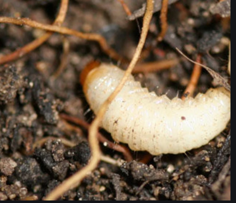
Drench soil with ALONZE 50EC 10ml/20l or mix 2kg ADVENTURE 0.5GR with 50kg fertilizer.
5. Mites - their infestation reduces plant vigour and plants appear retarded, twisted, and distorted. Leaves turn yellow with whitish feeding marks and may eventually die with continued infestation. Silvery webbing on the leaves and stems can also be seen.
example:
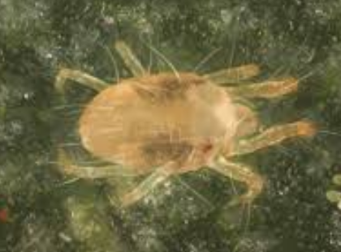
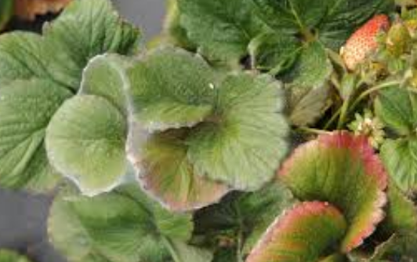
Spray ALONZE 50EC 5ml/20l or BAZOOKA 18EC 10ml/20l
6. Aphids-they feed through piercing and sucking the plant sap resulting into distorted growth. Severe cases of infestation reduces quality and quality of produce. They excrete honeydew which favors the growth of sooty mold.
example:
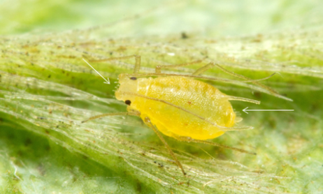
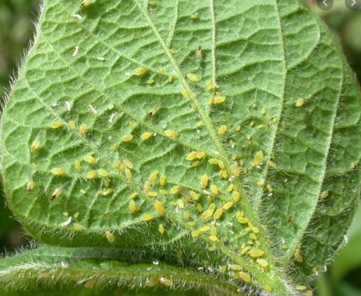
Spray KINGCODE ELITE 50EC 10ml/20l or PRESENTO 200SP 5g/20l or LEXUS 247SC 8ml/20l or
Spray JAMBO CLEAN 100ml/20l to clean the sooty mold.
The crop takes about 70 days to maturity. Usually, fruits are ready for harvesting 4–6 weeks after blossoming and only the fully ripened (red) berries should be picked because they do not ripen after harvesting.
Harvesting can be done up to 3 weeks and this should produce a lot of berries, depending on the variety and the management practices employed. For instance; if well managed, a 1/8th piece of land can produce 30-50kg of strawberries per week.
Strawberries are fragile and are easily damaged/bruised and should thus be handled carefully, for instance, when picking them from the strawberry plants.
Strawberries should picked in the morning when the fruits are cool and while dry because when wet, they mold quickly. Soon after harvesting, the berries should be stored unwashed in cool, dry place like in a refrigerator, where they can last for 5-7 days.
They can also be dried, frozen or made into jam or preserves.